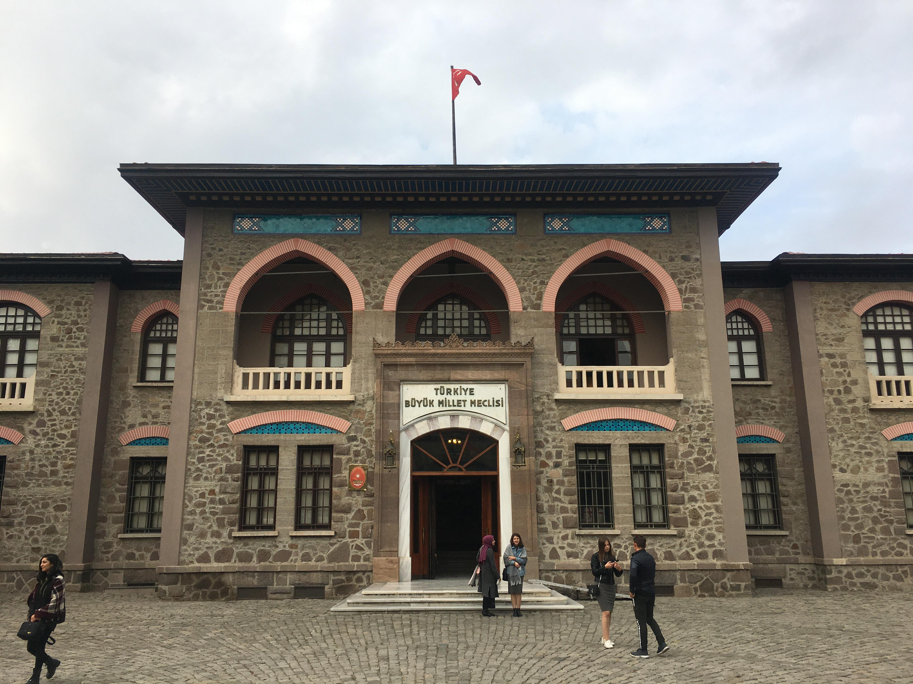

Büyük
Millet
Meclisi
|
| Türkiye Büyük Millet Meclisi, Temsil Heyeti adına Mustafa Kemal Paşa'nın
21 Nisan 1920'de yayımladığı tamim gereğince; Hacı Bayram-ı Veli Camii'nde kılınan cuma namazını takiben dualar eşliğinde
kurbanların kesilmesinin ardından coşkulu bir törenle 23 Nisan 1920'de açılmıştır. Türkiye Büyük Millet Meclisinin görev ve yetkileri, kanun koymak, değiştirmek ve kaldırmak; Bakanlar Kurulunu ve bakanları denetlemek; Bakanlar Kuruluna belli konularda kanun hükmünde kararname çıkarma yetkisi vermek; bütçe ve kesin hesap kanun tasarılarını görüşmek ve kabul etmek; para basılmasına ve savaş ilanına karar vermek; Milletlerarası andlaşmaların onaylanmasını uygun bulmak; Türkiye Büyük Millet Meclisi üye tamsayısının beşte üç çoğunluğunun kararı ile genel ve özel af ilanına karar vermek ve Anayasanın diğer maddelerinde öngörülen yetkileri kullanmak ve görevleri yerine getirmektir. . |
|  |
| |
| E-Devlet | |
| Türkiye |
Büyük Millet Meclisi |